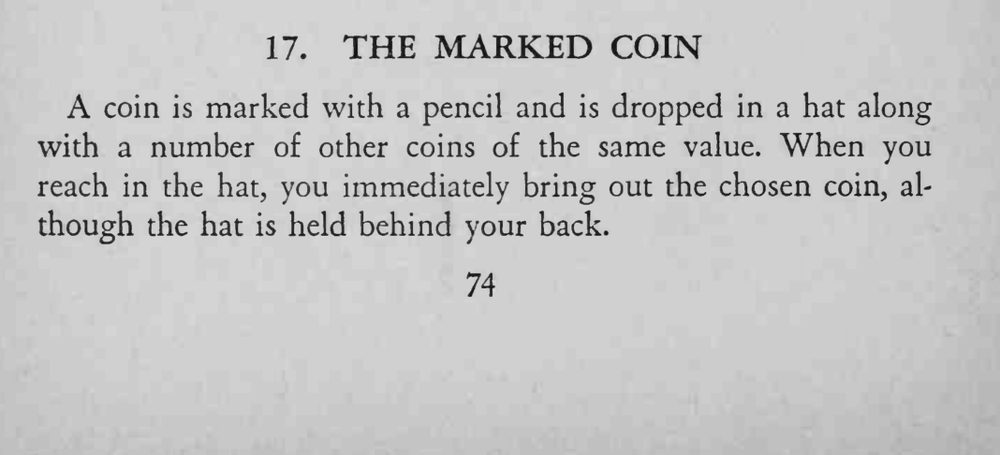
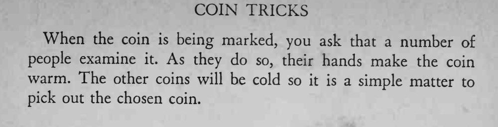

观众用铅笔在硬币上做记号，丢进装满同值硬币的帽子；魔术师背过身伸手一摸，就把它拿了出来。
必须让多人传看，硬币才有足够温度；表演前别让帽子里的硬币被捂热。


A coin is marked with a pencil and is dropped in a hat along with a number of other coins of the same value. When you reach in the hat, you immediately bring out the chosen coin, although the hat is held behind your back. When the coin is being marked, you ask that a number of people examine it. As they do so, their hands make the coin warm. The other coins will be cold so it is a simple matter to pick out the chosen coin.